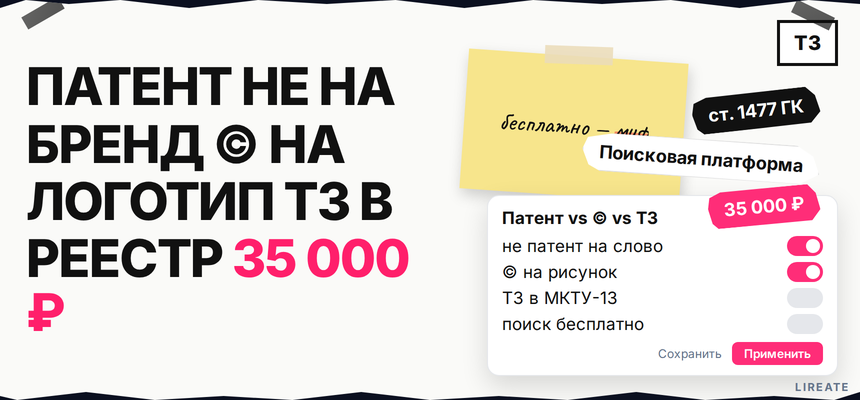
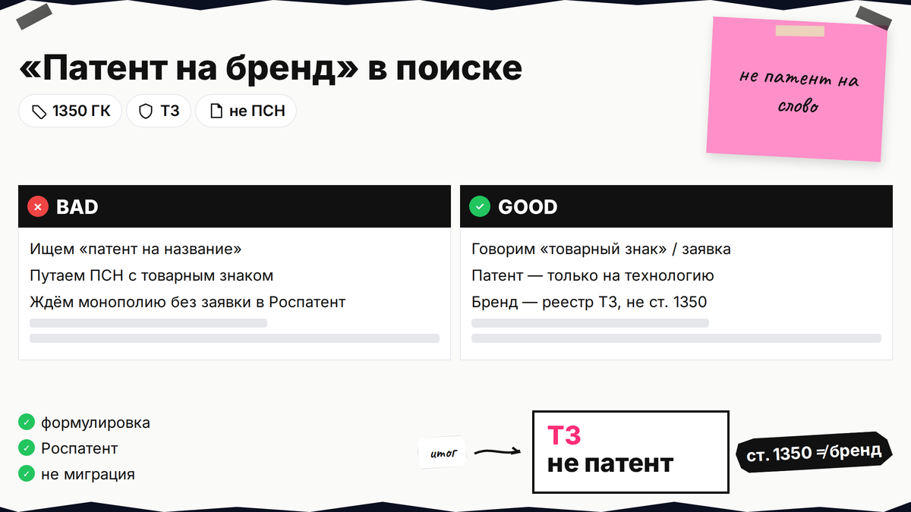
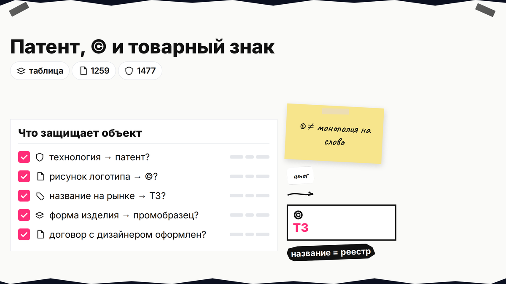
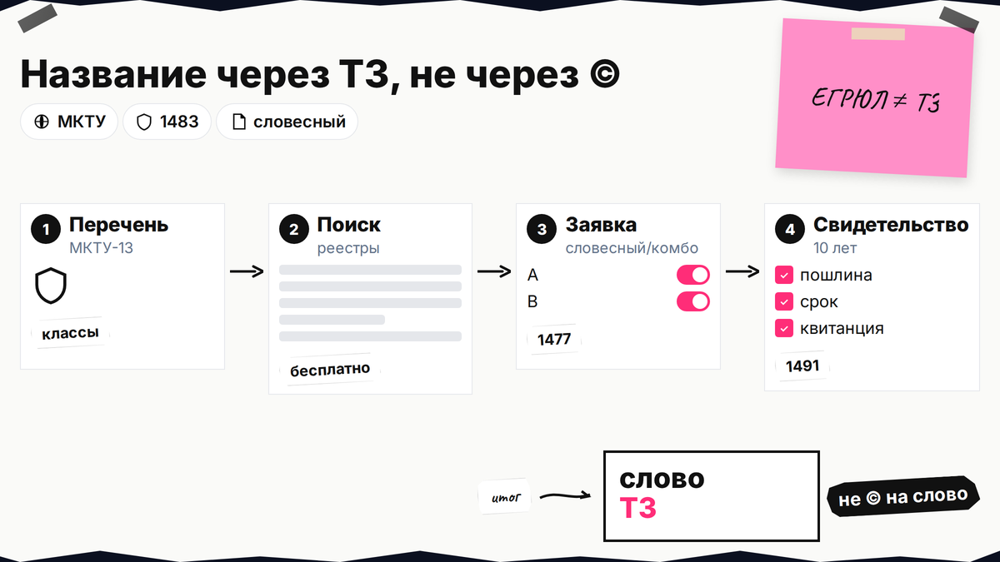

Запрос "как запатентовать логотип и название" почти всегда про товарный знак, а не про патент на изобретение или миграционный патент. Слово на витрине не даёт монополию через ©, а "бесплатно запатентовать бренд" нельзя - бесплатен только поиск в реестрах. Ниже - различие патента, © и ТЗ, проверка обозначения и минимум 35 000 ₽ пошлин без гарантии регистрации.

TL;DR / Быстрый инсайт: Патент (ст. 1350 ГК РФ) - на техническое решение или промышленный образец, не на слово-бренд. Авторское право на логотип-рисунок возникает при создании (п. 4 ст. 1259), но не даёт монополии на название в торговле. Товарный знак - единственный типовой способ запретить чужим использовать сходное обозначение в ваших классах МКТУ после регистрации (ст. 1477). Проверка - бесплатно на Поисковой платформе (гайд по реестрам ФИПС); подача заявки - пошлины 2.1 + 2.4 + 2.11, минимум 35 000 ₽ за 1 класс (пп. 2.1 + 2.4 + 2.11; таблица Роспатента).
Для ИП и малого бизнеса: когда хватает договора с дизайнером, когда нужна заявка в Роспатент, и почему имя в ЕГРЮЛ не равно свободе бренда. Не юридическая консультация; исход экспертизы не гарантируется.

В быту "запатентовать название" путают с регистрацией товарного знака. Патент по ст. 1350 ГК РФ - на изобретение, модель или промобразец, не на фирменное слово. Не путайте с ПСН и миграционным патентом.
Делайте: в переписке с бухгалтерией и юристами говорить "товарный знак" или "заявка в Роспатент". Не делайте: искать "патент на бренд" как отдельную услугу - в выдаче будет регистрация ТЗ или реклама бюро без расшифровки пошлин.

Разложите активы: слово, рисунок, слоган, технология. Для каждого выберите строку таблицы - так не переплатите и не останетесь без защиты на рынке.
| Объект | Инструмент | Документ / основание | Орган | Срок / нюанс |
|---|---|---|---|---|
| Технология, устройство | Патент | Патент РФ | Роспатент | Ограниченный срок; не про название магазина |
| Оригинальный рисунок логотипа | Авторское право | Факт создания (ст. 1259) | Не регистрируют в Роспатенте | © на графику; спор - через суд, не через реестр ТЗ |
| Название и знак для товаров/услуг | Товарный знак | Свидетельство после регистрации | Роспатент | 10 лет, продление (ст. 1491) |
| Форма упаковки / изделия | Промышленный образец | Патент на промобразец | Роспатент | Не заменяет словесный ТЗ |
Итоговый вердикт: для названия на рынке смотрите в сторону словесного или комбинированного товарного знака; для картинки - © на макет плюс при необходимости изобразительный ТЗ; патент имеет смысл только если вы защищаете конструкцию или внешний вид изделия, а не одно слово.
Делайте: зафиксировать в таблице, кто автор логотипа и кому переданы права по договору. Не делайте: ставить © на название и считать, что конкурент не сможет зарегистрировать похожее слово в ваших классах.

Монополия на обозначение в торговле - после регистрации ТЗ (ст. 1477). Имя в ЕГРЮЛ или вывеска без ТЗ такой монополии не дают; п. 7 ст. 1259 - не про любое слово-бренд.
Словесный знак - в классах МКТУ-13–2026 (подбор класса). Сходство с чужим ТЗ для однородных товаров - отказ (п. 6 ст. 1483).
Делайте: формулировать перечень товаров и услуг под реальный ассортимент на 3-5 лет. Не делайте: полагаться на проверку "уникальности названия организации" в ЕГРЮЛ - там другой регистр; свободное имя юрлица не отменяет чужой ТЗ в нужных классах.
Логотип - изобразительное произведение (п. 1 ст. 1259), © с момента создания. © держит ваш макет, но не запрещает рынку сходные знаки - для этого изобразительный или комбинированный ТЗ. Договор с дизайнером и исходники нужны до подачи заявки от компании.
Делайте: сохранить слои, шрифты и договор до подачи заявки. Не делайте: копировать чужой логотип с изменением пары пикселей - риск и по ©, и по отказу в регистрации ТЗ.
В одной заявке - одно обозначение. Варианты:
Делайте: сравнить пошлины до подачи. Не делайте: ждать, что комбо-знак защитит слово в любом шрифте - охрана только по заявленному виду.
Бесплатно: Поисковая платформа и реестры ФИПС. В карточке ТЗ - правообладатель и классы; смотрите и реестр заявок. Подробно - проверка в реестрах Роспатента и ФИПС, риски - чек-лист перед подачей. Пустой поиск не гарантирует регистрацию.
Делайте: проверку до траты на пошлины. Не делайте: путать "никто не зарегистрировал такое ООО" с "знак свободен для ТЗ".
Миф "бесплатно": поиск бесплатен (гайд по бесплатной проверке в реестрах), регистрация — по таблице пошлин Роспатента: 2.1 + 2.4 при подаче, 2.11 после решения. Минимум 1 класс: 35 000 ₽ (4 000 + 13 000 + 18 000, пп. 2.1 + 2.4 + 2.11) независимо от способа подачи; свидетельство электронное, бумажный экземпляр — по п. 2.14 (3 000 ₽), поверенный отдельно. Неиспользование 3 года — риск по ст. 1486; при спорах — компенсация по ст. 1515.
Схема после решения "нужен ТЗ":
Проверка и чек-лист → реестры ФИПС → классы МКТУ → заявка и пошлины → экспертиза → свидетельство 10 лет → DIY-подача описана в гайде по самостоятельной регистрации в 2026
Делайте: заложить риск отказа: пошлины за экспертизу обычно не возвращаются. Не делайте: верить рекламе "регистрация от 0 ₽" без строки про 35 000 ₽ госпошлин.
При продажах под именем типовой маршрут - ТЗ в нужных классах. DIY с теми же пошлинами - гайд по самостоятельной регистрации в 2026; сопровождение на Лирейт - регистрация товарного знака без гарантии исхода.
Делайте: проверку и классы до тиража упаковки. Не делайте: путать © на сайте с монополией на рынке.
Кратко опишите задачу: бренд, видео, перевод или товарный знак. Подскажем следующий шаг по ГК РФ.
Материал проверен: эксперт Елена Ковалева (главный эксперт по SEO/GEO), редакция Лирейт.
Достоверность данных: нормы ГК РФ (ст. 1259, 1350, 1477, 1483, 1486, 1491, 1515), таблица пошлин Роспатента, Поисковая платформа и реестры ФИПС сверены с официальными источниками на 05.11.2026
Как товарный знак - да, если обозначение не противоречит ст. 1483 и вы подадите заявку в Роспатент. Как патент на название - нет (ст. 1350). Регистрация наименования в ЕГРЮЛ не заменяет ТЗ.
На произвольное слово-бренд для товаров и услуг - нет в том смысле, в котором ждут монополию. © может охранять название только как часть конкретного творческого произведения (п. 7 ст. 1259). Для торговли используйте словесный товарный знак.
© фиксирует права на изображение, но не подменяет реестр ТЗ. Для запрета сходных знаков у конкурентов в ваших классах подайте заявку на изобразительный или комбинированный знак после проверки в реестрах.
Для зарегистрированного обозначения откройте карточку в Поисковой платформе или по шагам в гайде по реестрам ФИПС - там указан правообладатель. Для стратегии рисков - чек-лист перед подачей.
Бесплатно — только поиск и просмотр открытых данных. Государственная регистрация ТЗ требует пошлин; минимум 35 000 ₽ за один класс (пп. 2.1 + 2.4 + 2.11) по официальной таблице без учёта услуг бюро; бумажное свидетельство — отдельно по п. 2.14 (3 000 ₽).
ЕГРЮЛ исключает повтор фирменного наименования юрлица в регистре, но не даёт исключительного права на обозначение как ТЗ во всех классах. Конкурент может иметь другое ООО и при этом чужой или свой ТЗ на похожее слово в вашей нише.
Если нужна охрана и слова, и рисунка как разных объектов - две заявки и двойной блок пошлин. Если устраивает защита связки "слово + символ" как на макете - один комбинированный знак; подробности подачи - в гайде по самостоятельной регистрации в 2026.